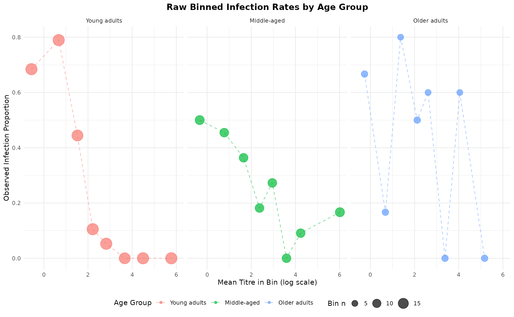
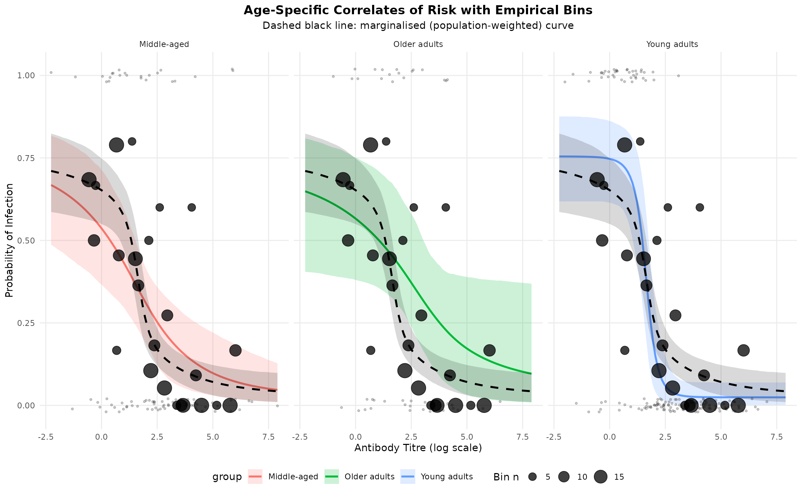
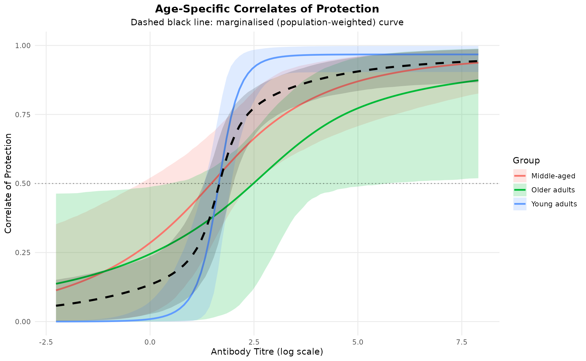
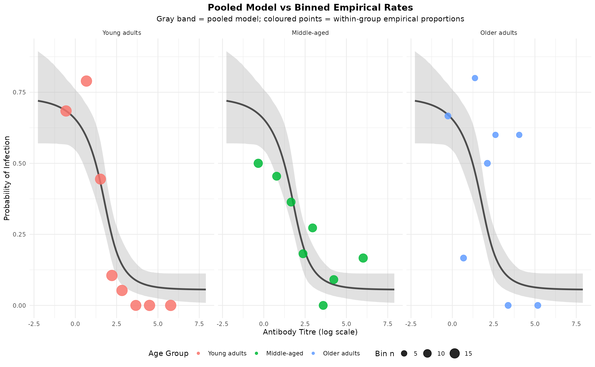

vignettes/hierarchical-groups.Rmd
hierarchical-groups.RmdThis vignette demonstrates how to use hierarchical modeling in
SeroCOP to account for group-level heterogeneity in
correlates of protection. This is particularly useful when different
subpopulations (e.g. age groups, geographic regions, or vaccine types)
may have different dose–response relationships.
Hierarchical modeling is appropriate when:
We demonstrate with a realistic scenario where the strength of the antibody–protection relationship varies by age group:
The three age groups have different sample sizes to reflect typical epidemiological studies where recruitment is unequal.
# ---- unequal group sizes ----
young_n <- 150 # most participants
middle_n <- 90
old_n <- 45 # fewest participants
simulate_group <- function(n, group_name, slope, ec50,
floor = 0.05, ceiling = 0.70) {
titre <- rnorm(n, mean = 2.5, sd = 2.0)
logit_part <- 1 / (1 + exp(slope * (titre - ec50)))
prob_infection <- ceiling * (logit_part * (1 - floor) + floor)
infected <- rbinom(n, 1, prob_infection)
data.frame(titre = titre, infected = infected, age_group = group_name)
}
young <- simulate_group(young_n, "Young adults", slope = 3.0, ec50 = 1.5)
middle <- simulate_group(middle_n, "Middle-aged", slope = 1.5, ec50 = 1.8)
old <- simulate_group(old_n, "Older adults", slope = 0.3, ec50 = 2.0)
all_data <- rbind(young, middle, old)
# Use an ordered factor so panels appear in a natural left-to-right order
all_data$age_group <- factor(all_data$age_group,
levels = c("Young adults", "Middle-aged", "Older adults"))
cat("Simulated data with age-specific correlates:\n")
#> Simulated data with age-specific correlates:
cat(sprintf(" Young adults (n=%d): slope=3.0, ec50=1.5 — strong correlate\n", young_n))
#> Young adults (n=150): slope=3.0, ec50=1.5 — strong correlate
cat(sprintf(" Middle-aged (n=%d): slope=1.5, ec50=1.8 — moderate correlate\n", middle_n))
#> Middle-aged (n=90): slope=1.5, ec50=1.8 — moderate correlate
cat(sprintf(" Older adults (n=%d): slope=0.3, ec50=2.0 — weak correlate\n", old_n))
#> Older adults (n=45): slope=0.3, ec50=2.0 — weak correlate
cat(sprintf("\nTotal n=%d | Infection rate: %.1f%%\n",
nrow(all_data), 100 * mean(all_data$infected)))
#>
#> Total n=285 | Infection rate: 28.1%Before fitting, it is helpful to summarise the raw data by binning titres and computing the observed infection proportion in each bin. These empirical points will later be overlaid on the fitted curves to assess goodness-of-fit.
# Bin titre into deciles *within each age group*
n_bins <- 8
all_data$bin <- ave(
all_data$titre, all_data$age_group,
FUN = function(x) {
breaks <- unique(quantile(x, probs = seq(0, 1, length.out = n_bins + 1)))
as.integer(cut(x, breaks = breaks, include.lowest = TRUE))
}
)
# Summarise per group × bin
binned <- aggregate(
cbind(infected, titre) ~ age_group + bin,
data = all_data,
FUN = mean
)
bin_n <- aggregate(infected ~ age_group + bin, data = all_data, FUN = length)
binned$n <- bin_n$infected
head(binned)
#> age_group bin infected titre n
#> 1 Young adults 1 0.6842105 -0.5614768 19
#> 2 Middle-aged 1 0.5000000 -0.3363742 12
#> 3 Older adults 1 0.6666667 -0.2649755 6
#> 4 Young adults 2 0.7894737 0.6731679 19
#> 5 Middle-aged 2 0.4545455 0.7761623 11
#> 6 Older adults 2 0.1666667 0.6798197 6
ggplot(binned, aes(x = titre, y = infected, colour = age_group)) +
geom_point(aes(size = n), alpha = 0.7) +
geom_line(aes(group = age_group), alpha = 0.5, linetype = "dashed") +
scale_size_area(max_size = 8, guide = guide_legend(title = "Bin n")) +
facet_wrap(~age_group) +
labs(
title = "Raw Binned Infection Rates by Age Group",
x = "Mean Titre in Bin (log scale)",
y = "Observed Infection Proportion",
colour = "Age Group"
) +
theme_minimal() +
theme(legend.position = "bottom", plot.title = element_text(hjust = 0.5, face = "bold"))
Binned observed infection rates (point area ∝ bin size). These will be overlaid on fitted curves later.
The hierarchical model estimates group-specific ec50 and
slope values while sharing a common floor and
ceiling. Group-level random effects borrow strength across
age groups.
By default, ceiling is fixed across groups (shared
attack rate). Pass ceiling_group = TRUE if you expect the
baseline attack rate to differ by group.
hier_model <- SeroCOP$new(
titre = all_data$titre,
infected = all_data$infected,
group = all_data$age_group
)
hier_model$fit_model(
chains = 4,
iter = 2000,
warmup = 1000,
cores = 1,
ceiling_group = FALSE, # shared ceiling (default)
refresh = 0
)The plot below shows the posterior mean curve and 95% credible interval for each age group, with the marginalised (population-weighted) curve as a dashed black line. Empirical binned points are overlaid to allow visual assessment of model fit.
# --- 1. Get fitted curve data via the built-in method -------------------------
p_base <- hier_model$plot_group_curves(
title = "Age-Specific Correlates of Risk with Empirical Bins",
weights_pop = c("Young adults" = young_n,
"Middle-aged" = middle_n,
"Older adults" = old_n)
)
# --- 2. Overlay binned empirical points (size ∝ bin n) -----------------------
p_base +
geom_point(
data = binned,
mapping = aes(x = titre, y = infected, size = n),
colour = "black", alpha = 0.75, inherit.aes = FALSE
) +
scale_size_area(max_size = 7, guide = guide_legend(title = "Bin n")) +
theme(legend.position = "bottom")
The black dots are the raw binned proportions. When they track the fitted curve closely, it indicates a good fit. Deviations suggest model mis-specification or sparse data in that titre region.
The correlate of protection (COP) is defined as:
This quantifies the probability of being protected conditional on exposure. The population-weighted marginalised COP curve summarises the overall effectiveness across age groups.
hier_model$plot_cop_curves(
title = "Age-Specific Correlates of Protection",
weights_pop = c("Young adults" = young_n,
"Middle-aged" = middle_n,
"Older adults" = old_n)
)
group_params <- hier_model$extract_group_parameters()
print(group_params)
#> group parameter mean median sd q025 q975
#> 1 Young adults ceiling 0.7535608 0.7562615 0.06530828 0.616718632 0.8736953
#> 2 Young adults ec50 1.6228170 1.6269624 0.16381614 1.273193288 1.9407667
#> 3 Young adults slope 4.2703235 3.9450179 1.76451069 1.802135171 8.6867585
#> 4 Middle-aged ceiling 0.7535608 0.7562615 0.06530828 0.616718632 0.8736953
#> 5 Middle-aged ec50 1.2456847 1.3545520 0.68539125 -0.438686108 2.3425992
#> 6 Middle-aged slope 0.7637980 0.6446116 0.51850845 0.259426276 2.0535662
#> 7 Older adults ceiling 0.7535608 0.7562615 0.06530828 0.616718632 0.8736953
#> 8 Older adults ec50 2.1579099 2.0386108 0.95894496 0.453728701 4.1092192
#> 9 Older adults slope 0.6560202 0.5138150 0.60495916 -0.004831226 2.3138291Key observations:
slope —
a strong antibody correlateslope near zero —
little titre-dependent protectionec50 shifts to the right with age — older individuals
need higher titres for equivalent protection
metrics <- hier_model$get_metrics()
#> Performance Metrics:
#> ROC AUC (marginalised): 0.807
#> ROC AUC (within-group wtd): 0.812
#> Brier Score: 0.136
#> LOO ELPD: -125.64 (SE: 9.03)
#> LOO ELPD by group:
#> Young adults -46.12 (SE: 6.30, n = 150)
#> Middle-aged -49.23 (SE: 5.45, n = 90)
#> Older adults -30.29 (SE: 2.53, n = 45)The per-group LOO-ELPD breakdown shows how much each age group contributes to (or detracts from) overall model fit. A lower ELPD for a group indicates the model fits that group less well — often because it has fewer participants or a weaker signal.
pooled_model <- SeroCOP$new(
titre = all_data$titre,
infected = all_data$infected
)
pooled_model$fit_model(
chains = 4,
iter = 2000,
warmup = 1000,
cores = 1,
refresh = 0
)
hier_loo <- hier_model$loo$estimates["elpd_loo", c("Estimate", "SE")]
pooled_loo <- pooled_model$loo$estimates["elpd_loo", c("Estimate", "SE")]
loo_diff <- hier_loo["Estimate"] - pooled_loo["Estimate"]
loo_se <- sqrt(hier_loo["SE"]^2 + pooled_loo["SE"]^2)
cat("=== Model Comparison (LOO-CV) ===\n")
#> === Model Comparison (LOO-CV) ===
cat(sprintf("Hierarchical ELPD: %.2f (SE: %.2f)\n", hier_loo["Estimate"], hier_loo["SE"]))
#> Hierarchical ELPD: -125.64 (SE: 9.03)
cat(sprintf("Pooled ELPD: %.2f (SE: %.2f)\n", pooled_loo["Estimate"], pooled_loo["SE"]))
#> Pooled ELPD: -134.95 (SE: 9.45)
cat(sprintf("Difference: %.2f (SE: %.2f) | Z = %.2f\n",
loo_diff, loo_se, loo_diff / loo_se))
#> Difference: 9.31 (SE: 13.07) | Z = 0.71
if (loo_diff > 2 * loo_se) {
cat("-> Strong evidence favouring hierarchical model\n")
} else if (loo_diff > 0) {
cat("-> Hierarchical preferred but evidence is weak\n")
} else {
cat("-> No clear advantage for hierarchical model\n")
}
#> -> Hierarchical preferred but evidence is weakThe pooled model uses a single curve for all age groups. Overlaying the binned empirical rates highlights how much signal is lost by ignoring heterogeneity.
titre_grid <- seq(min(all_data$titre), max(all_data$titre), length.out = 100)
pooled_pred <- pooled_model$predict(newdata = titre_grid)
pooled_df <- data.frame(
titre = titre_grid,
prob = colMeans(pooled_pred),
lower = apply(pooled_pred, 2, quantile, probs = 0.025),
upper = apply(pooled_pred, 2, quantile, probs = 0.975)
)
ggplot() +
geom_ribbon(data = pooled_df,
aes(x = titre, ymin = lower, ymax = upper),
fill = "gray70", alpha = 0.4) +
geom_line(data = pooled_df,
aes(x = titre, y = prob),
colour = "gray30", linewidth = 1.2) +
geom_point(data = binned,
mapping = aes(x = titre, y = infected,
colour = age_group, size = n),
alpha = 0.85) +
scale_size_area(max_size = 7, guide = guide_legend(title = "Bin n")) +
facet_wrap(~age_group) +
labs(
title = "Pooled Model vs Binned Empirical Rates",
subtitle = "Gray band = pooled model; coloured points = within-group empirical proportions",
x = "Antibody Titre (log scale)",
y = "Probability of Infection",
colour = "Age Group"
) +
theme_minimal() +
theme(legend.position = "bottom",
plot.title = element_text(hjust = 0.5, face = "bold"),
plot.subtitle = element_text(hjust = 0.5))
The hierarchical model uses random intercepts on ec50
and slope:
infected ~ ceiling * (inv_logit(-slope * (titre - ec50)) * (1 - floor) + floor)
floor ~ 1
ceiling ~ 1 # fixed across groups (ceiling_group = FALSE)
ec50 ~ 1 + (1 | group) # random intercept per group
slope ~ 1 + (1 | group) # random intercept per groupSet ceiling_group = TRUE in fit_model() to
also allow the ceiling (maximum attack rate) to vary across groups.
student_t(3, 0, 2.5) —
weakly informative, permitting substantial between-group variation while
regularising extremes.floor/ceiling; Normal on ec50
(centred on data midpoint) and slope.Pass a named numeric vector to weights_pop in
plot_group_curves() and plot_cop_curves() to
control how the marginalised curve is computed:
# Census-based age-group proportions (must sum to any positive value)
hier_model$plot_cop_curves(
weights_pop = c("Young adults" = 0.45, "Middle-aged" = 0.35, "Older adults" = 0.20)
)If weights_pop = NULL (default), sample proportions are
used instead.
SeroCOP hierarchical models provide a flexible framework
for analysing correlates of protection with group-level
heterogeneity:
ec50 and slope are
estimated while borrowing strengthceiling ensures identifiability;
ceiling_group = TRUE relaxes thisplot_cop_curves() summarises protection across the
titre range with a population-weighted marginalised curve
sessionInfo()
#> R version 4.5.3 (2026-03-11)
#> Platform: x86_64-pc-linux-gnu
#> Running under: Ubuntu 24.04.3 LTS
#>
#> Matrix products: default
#> BLAS: /usr/lib/x86_64-linux-gnu/openblas-pthread/libblas.so.3
#> LAPACK: /usr/lib/x86_64-linux-gnu/openblas-pthread/libopenblasp-r0.3.26.so; LAPACK version 3.12.0
#>
#> locale:
#> [1] LC_CTYPE=C.UTF-8 LC_NUMERIC=C LC_TIME=C.UTF-8
#> [4] LC_COLLATE=C.UTF-8 LC_MONETARY=C.UTF-8 LC_MESSAGES=C.UTF-8
#> [7] LC_PAPER=C.UTF-8 LC_NAME=C LC_ADDRESS=C
#> [10] LC_TELEPHONE=C LC_MEASUREMENT=C.UTF-8 LC_IDENTIFICATION=C
#>
#> time zone: UTC
#> tzcode source: system (glibc)
#>
#> attached base packages:
#> [1] stats graphics grDevices utils datasets methods base
#>
#> other attached packages:
#> [1] ggplot2_4.0.2 seroCOP_0.1.0
#>
#> loaded via a namespace (and not attached):
#> [1] gtable_0.3.6 tensorA_0.36.2.1 xfun_0.57
#> [4] bslib_0.10.0 QuickJSR_1.9.0 processx_3.8.6
#> [7] inline_0.3.21 lattice_0.22-9 callr_3.7.6
#> [10] ps_1.9.1 vctrs_0.7.2 tools_4.5.3
#> [13] generics_0.1.4 stats4_4.5.3 parallel_4.5.3
#> [16] tibble_3.3.1 pkgconfig_2.0.3 brms_2.23.0
#> [19] Matrix_1.7-4 checkmate_2.3.4 RColorBrewer_1.1-3
#> [22] S7_0.2.1 desc_1.4.3 distributional_0.7.0
#> [25] RcppParallel_5.1.11-2 lifecycle_1.0.5 compiler_4.5.3
#> [28] farver_2.1.2 stringr_1.6.0 textshaping_1.0.5
#> [31] Brobdingnag_1.2-9 codetools_0.2-20 htmltools_0.5.9
#> [34] sass_0.4.10 bayesplot_1.15.0 yaml_2.3.12
#> [37] pillar_1.11.1 pkgdown_2.2.0 jquerylib_0.1.4
#> [40] cachem_1.1.0 StanHeaders_2.32.10 bridgesampling_1.2-1
#> [43] abind_1.4-8 nlme_3.1-168 posterior_1.6.1
#> [46] rstan_2.32.7 tidyselect_1.2.1 digest_0.6.39
#> [49] mvtnorm_1.3-6 stringi_1.8.7 dplyr_1.2.0
#> [52] labeling_0.4.3 fastmap_1.2.0 grid_4.5.3
#> [55] cli_3.6.5 magrittr_2.0.4 loo_2.9.0
#> [58] pkgbuild_1.4.8 withr_3.0.2 scales_1.4.0
#> [61] backports_1.5.0 rmarkdown_2.30 matrixStats_1.5.0
#> [64] gridExtra_2.3 ragg_1.5.2 coda_0.19-4.1
#> [67] evaluate_1.0.5 knitr_1.51 rstantools_2.6.0
#> [70] rlang_1.1.7 Rcpp_1.1.1 glue_1.8.0
#> [73] pROC_1.19.0.1 jsonlite_2.0.0 R6_2.6.1
#> [76] systemfonts_1.3.2 fs_2.0.0